pacman::p_load(tidyverse,
ggcorrplot, ggstatsplot, GGally,
SmartEDA, easystats, gtsummary, ggstatsplot,
ggExtra,parallelPlot) Take home exercise 01
1.Introduction
The transport industry plays an increasingly important role in globalization and has a significant impact on sustainable development. One major challenge is finding ways to adjust various factors to improve maritime transportation efficiency while maximizing profits.
The transport industry plays an increasingly important role in globalization and has a significant impact on sustainable development. One major challenge is finding ways to adjust various factors to improve maritime transportation efficiency while maximizing profits.This dataset is designed for maritime analytics, allowing researchers and industry professionals to explore clustering, predictive modeling, and optimization strategies. It includes key variables such as shipping route type, total operational cost per voyage, and maintenance status, providing insights into ship performance under different conditions.
By analyzing ship performance, this dataset helps identify important factors affecting efficiency and supports better fleet management decisions. Understanding these relationships can contribute to reducing costs, improving fuel efficiency, and making maritime operations more sustainable.2.Prepare Data
2.1Installing and loading the packages
The code chunk below uses the p_load() function to install and launch the packages in RStudio
tidyverse : Core collection of R packages designed for data science
ggcorrplot : Offer options for matrix reordering and significance level display
GGally : Create complex plots and simplify exploratory data analysis
SmartEDA : Automates exploratory data analysis
easystats : To simplify statistical modeling and analysis
gtsummary : Creates professional summary tables
ggstatsplot : Integrate statistical details, facilitating enriched data exploration
ggExtra : For adding marginal plots to ggplot2
2.2 Import Data
This study utilizes the Ship Performance Clustering Dataset, sourced from Kaggle. The dataset provided in CSV format, consists of 2,736 rows and 18 columns, encompassing both numerical and categorical variables.
The dataset is publicly available under the CC BY 4.0 License, permitting reuse and modification with appropriate attribution.
The Ship Performance Dataset is a synthetic yet realistic compilation of operational metrics and attributes for vessels operating in the Gulf of Guinea
shipperformance <- read_csv("Ship_Performance_Dataset.csv")Rows: 2736 Columns: 18
── Column specification ────────────────────────────────────────────────────────
Delimiter: ","
chr (5): Ship_Type, Route_Type, Engine_Type, Maintenance_Status, Weather_C...
dbl (12): Speed_Over_Ground_knots, Engine_Power_kW, Distance_Traveled_nm, D...
date (1): Date
ℹ Use `spec()` to retrieve the full column specification for this data.
ℹ Specify the column types or set `show_col_types = FALSE` to quiet this message.2.3 Understand the data
shipperformance %>%
ExpData(type = 1) Descriptions Value
1 Sample size (nrow) 2736
2 No. of variables (ncol) 18
3 No. of numeric/interger variables 12
4 No. of factor variables 0
5 No. of text variables 5
6 No. of logical variables 0
7 No. of identifier variables 11
8 No. of date variables 1
9 No. of zero variance variables (uniform) 0
10 %. of variables having complete cases 100% (18)
11 %. of variables having >0% and <50% missing cases 0% (0)
12 %. of variables having >=50% and <90% missing cases 0% (0)
13 %. of variables having >=90% missing cases 0% (0)“No. of zero variance variables (uniform)” indicates that there is no variance among the data
“%. of variables having complete cases” means there are no missing values at all in the dataset.
2.4 Rename Column
The “Date” column was removed and replaced with a combination of “Quarter” and “Year”. This transformation allows for a more structured and interpretable representation of time, facilitating trend identification and seasonal pattern recognition within the dataset.
shipperformance <- shipperformance %>%
mutate(Date = as.Date(Date, format="%Y-%m-%d"),
Quarter = paste0("Q", quarter(Date)),
Year = year(Date),
Quarter_Year = paste0(Year, "-", Quarter))
shipperformance <- shipperformance %>%
select(-Date, -Year)
head(shipperformance)# A tibble: 6 × 19
Ship_Type Route_Type Engine_Type Maintenance_Status Speed_Over_Ground_kn…¹
<chr> <chr> <chr> <chr> <dbl>
1 Container Sh… None Heavy Fuel… Critical 12.6
2 Fish Carrier Short-haul Steam Turb… Good 10.4
3 Container Sh… Long-haul Diesel Fair 20.7
4 Bulk Carrier Transocea… Steam Turb… Fair 21.1
5 Fish Carrier Transocea… Diesel Fair 13.7
6 Fish Carrier Long-haul Heavy Fuel… Fair 18.6
# ℹ abbreviated name: ¹Speed_Over_Ground_knots
# ℹ 14 more variables: Engine_Power_kW <dbl>, Distance_Traveled_nm <dbl>,
# Draft_meters <dbl>, Weather_Condition <chr>, Cargo_Weight_tons <dbl>,
# Operational_Cost_USD <dbl>, Revenue_per_Voyage_USD <dbl>,
# Turnaround_Time_hours <dbl>, Efficiency_nm_per_kWh <dbl>,
# Seasonal_Impact_Score <dbl>, Weekly_Voyage_Count <dbl>,
# Average_Load_Percentage <dbl>, Quarter <chr>, Quarter_Year <chr>shipperformance %>%
ExpData(type = 2) Index Variable_Name Variable_Type Sample_n Missing_Count
1 1 Ship_Type character 2736 0
2 2 Route_Type character 2736 0
3 3 Engine_Type character 2736 0
4 4 Maintenance_Status character 2736 0
5 5 Speed_Over_Ground_knots numeric 2736 0
6 6 Engine_Power_kW numeric 2736 0
7 7 Distance_Traveled_nm numeric 2736 0
8 8 Draft_meters numeric 2736 0
9 9 Weather_Condition character 2736 0
10 10 Cargo_Weight_tons numeric 2736 0
11 11 Operational_Cost_USD numeric 2736 0
12 12 Revenue_per_Voyage_USD numeric 2736 0
13 13 Turnaround_Time_hours numeric 2736 0
14 14 Efficiency_nm_per_kWh numeric 2736 0
15 15 Seasonal_Impact_Score numeric 2736 0
16 16 Weekly_Voyage_Count numeric 2736 0
17 17 Average_Load_Percentage numeric 2736 0
18 18 Quarter character 2736 0
19 19 Quarter_Year character 2736 0
Per_of_Missing No_of_distinct_values
1 0 5
2 0 5
3 0 4
4 0 4
5 0 2736
6 0 2736
7 0 2736
8 0 2736
9 0 4
10 0 2736
11 0 2736
12 0 2736
13 0 2736
14 0 2736
15 0 2736
16 0 9
17 0 2736
18 0 4
19 0 5The newly processed dataset is now ready for analysis.
3.EDA
3.1 Explore the distribution
shipperformance %>%
ExpNumViz(
target = NULL,
nlim = 10,
Page = c(2,2)) $`0`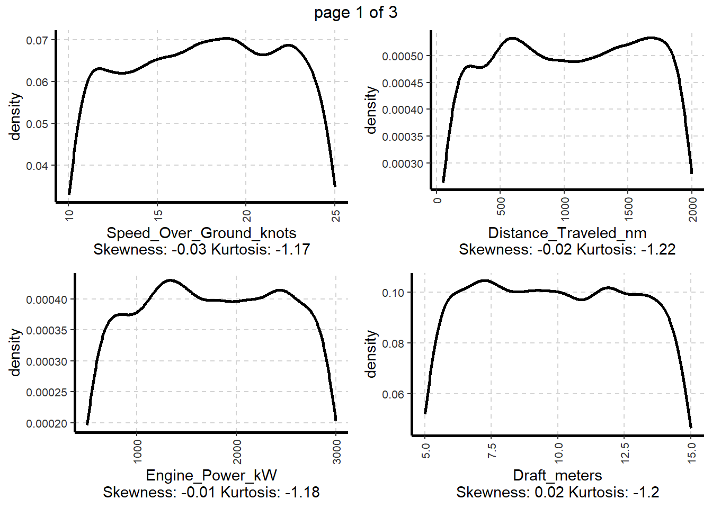
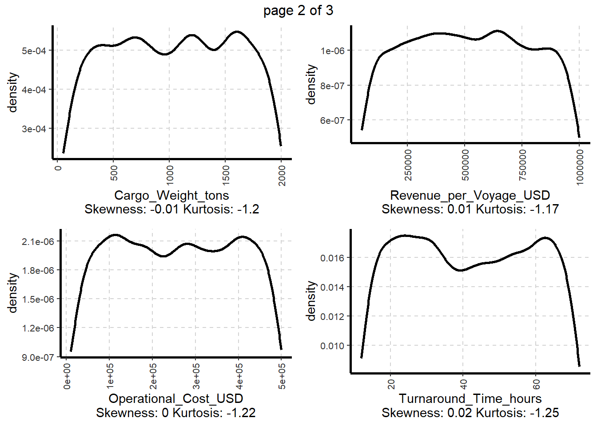
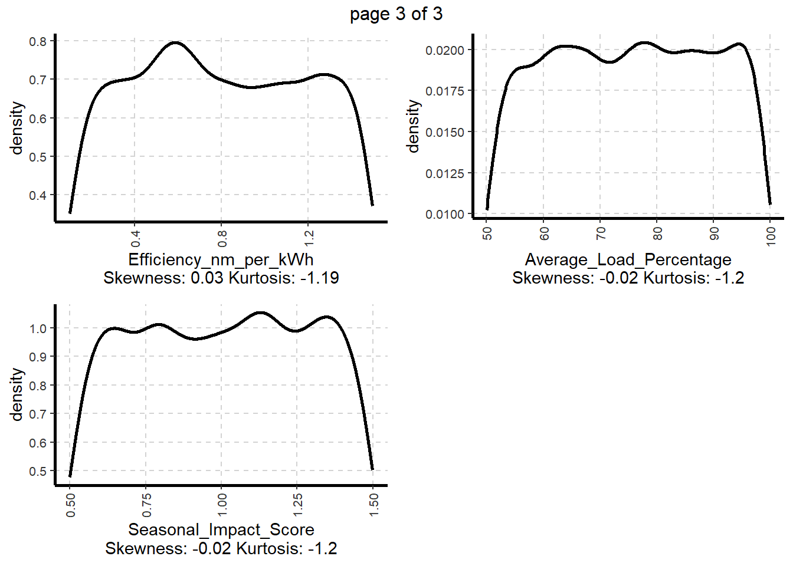
The density plots provide insights of the distribution characteristics of each variable, helping to identify their shape, skewness, and kurtosis. potential patterns, outliers and deviations.
All variables have skewness values close to zero, indicating relatively symmetric distributions. Kurtosis values suggest the distributions are slightly flatter than a normal distribution, meaning data points are more spread out.
3.2 Check the outliers
boxplot_data <- shipperformance %>%
select(Revenue_per_Voyage_USD, Operational_Cost_USD, Efficiency_nm_per_kWh, Operational_Cost_USD,Turnaround_Time_hours) %>%
pivot_longer(cols = everything(), names_to = "Metric", values_to = "Value")
ggplot(boxplot_data, aes(x = Metric, y = Value, fill = Metric)) +
geom_boxplot(outlier.colour = "red", outlier.shape = 16, alpha=0.6) +
theme_light() +
theme(axis.text.x = element_text(angle = 45, hjust = 1))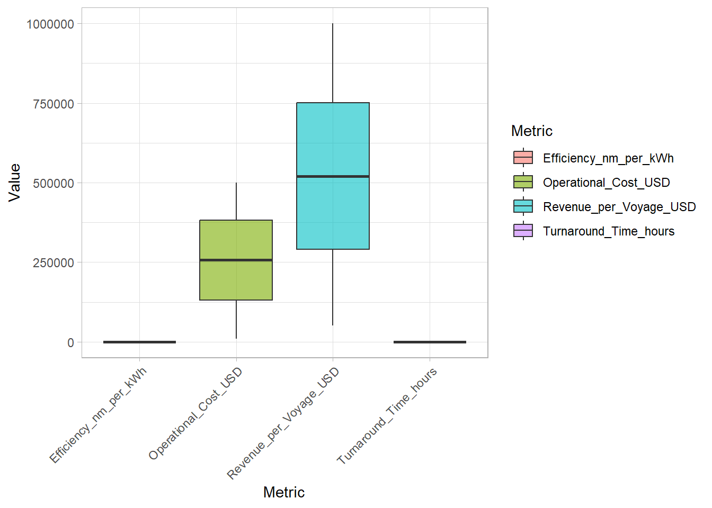
There are not outliers in the boxplot, meaning all values are in a reasonable range.
4. Visual Analysis
4.1 Quarterly Revenue Trends by Ship Type and Weather Impact Analysis
ggplot(shipperformance, aes(x = Quarter_Year, y = Revenue_per_Voyage_USD, group = Ship_Type, color = Ship_Type)) +
geom_line(stat="summary", fun="mean", size=1) +
geom_point(stat="summary", fun="mean", size=2) +
labs(title = "Quarterly Revenue Trend by Ship Type",
x = "Quarter-Year",
y = "Average Revenue per Voyage (USD)") +
theme_minimal(base_size = 14) +
theme(plot.title = element_text(face = "bold", size = 18, color = "darkblue"))Warning: Using `size` aesthetic for lines was deprecated in ggplot2 3.4.0.
ℹ Please use `linewidth` instead.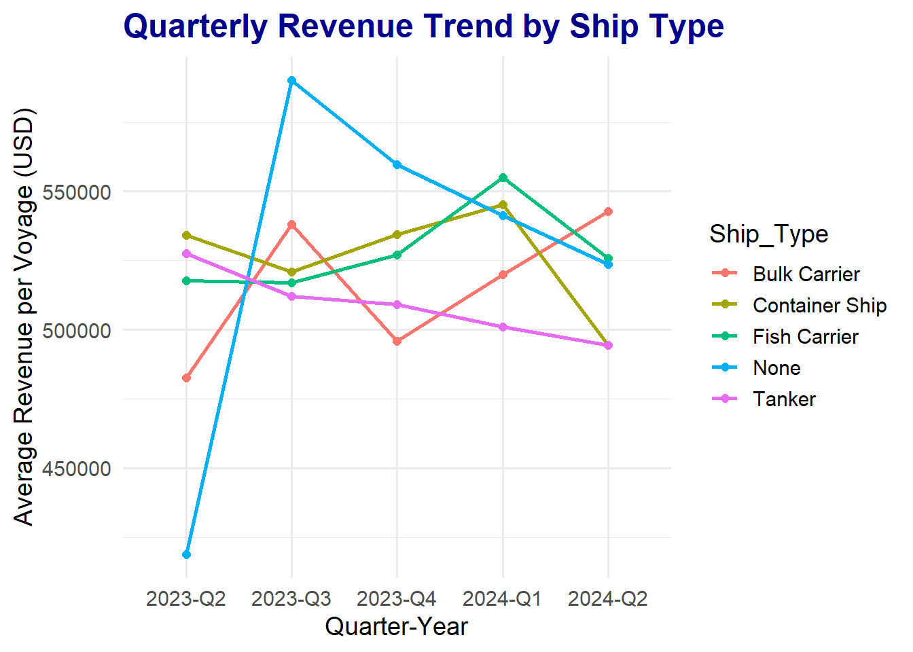
avg_revenue <- mean(shipperformance$Revenue_per_Voyage_USD, na.rm = TRUE) # Calculate global average
ggplot(shipperformance, aes(x = Quarter_Year, y = Revenue_per_Voyage_USD,
group = Ship_Type, color = Ship_Type)) +
geom_smooth(stat = "summary", fun = "mean", method = "loess", se = TRUE, size = 1.2, alpha = 0.3) +
geom_point(stat = "summary", fun = "mean", size = 3, alpha = 0.7) +
geom_line(stat = "summary", fun = "mean", size = 1.5) +
geom_hline(yintercept = avg_revenue, linetype = "dashed", color = "darkgrey", size = 1) + # Reference Line
facet_wrap(~ Weather_Condition, scales = "free_y") +
labs(title = "Quarterly Revenue Trends with Reference Line",
x = "Quarter-Year",
y = "Average Revenue per Voyage (USD)",
color = "Ship Type") +
theme_minimal(base_size = 14) +
theme(plot.title = element_text(face = "bold", size = 18, color = "darkblue"),
axis.text.x = element_text(angle = 45, vjust = 0.5, hjust = 1))Warning in max(ids, na.rm = TRUE): no non-missing arguments to max; returning
-Inf
Warning in max(ids, na.rm = TRUE): no non-missing arguments to max; returning
-Inf
Warning in max(ids, na.rm = TRUE): no non-missing arguments to max; returning
-Inf
Warning in max(ids, na.rm = TRUE): no non-missing arguments to max; returning
-Inf
Warning in max(ids, na.rm = TRUE): no non-missing arguments to max; returning
-Inf
Warning in max(ids, na.rm = TRUE): no non-missing arguments to max; returning
-Inf
Warning in max(ids, na.rm = TRUE): no non-missing arguments to max; returning
-Inf
Warning in max(ids, na.rm = TRUE): no non-missing arguments to max; returning
-Inf
Warning in max(ids, na.rm = TRUE): no non-missing arguments to max; returning
-Inf
Warning in max(ids, na.rm = TRUE): no non-missing arguments to max; returning
-Inf
Warning in max(ids, na.rm = TRUE): no non-missing arguments to max; returning
-Inf
Warning in max(ids, na.rm = TRUE): no non-missing arguments to max; returning
-Inf
Warning in max(ids, na.rm = TRUE): no non-missing arguments to max; returning
-Inf
Warning in max(ids, na.rm = TRUE): no non-missing arguments to max; returning
-Inf
Warning in max(ids, na.rm = TRUE): no non-missing arguments to max; returning
-Inf
Warning in max(ids, na.rm = TRUE): no non-missing arguments to max; returning
-Inf
Warning in max(ids, na.rm = TRUE): no non-missing arguments to max; returning
-Inf
Warning in max(ids, na.rm = TRUE): no non-missing arguments to max; returning
-Inf
Warning in max(ids, na.rm = TRUE): no non-missing arguments to max; returning
-Inf
Warning in max(ids, na.rm = TRUE): no non-missing arguments to max; returning
-Inf
-
The first visualization shows quarterly revenue changes for different ship types (distinguished by color). Container ships maintained relatively stable revenue across quarters, while fish carriers and bulk carriers exhibited significant fluctuations, suggesting that certain ship types may be more sensitive to market conditions or operational efficiency. The second graph incorporates weather conditions. The calm & moderate weather correlates with stable revenue, but rough weather increases volatility, especially for fish and bulk carriers. This implies weather impacts operational efficiency. It should be consider for ship type allocation to reduce revenue fluctuations.
4.2 Engine Type Efficiency Analysis
H0:There is no significant difference in the average fuel efficiency (nm per kWh) among different engine types.
H1:At least one engine type has significantly different fuel efficiency compared to the others.
ggbetweenstats(
data = shipperformance,
x = Engine_Type,
y = Efficiency_nm_per_kWh,
type = "p"
)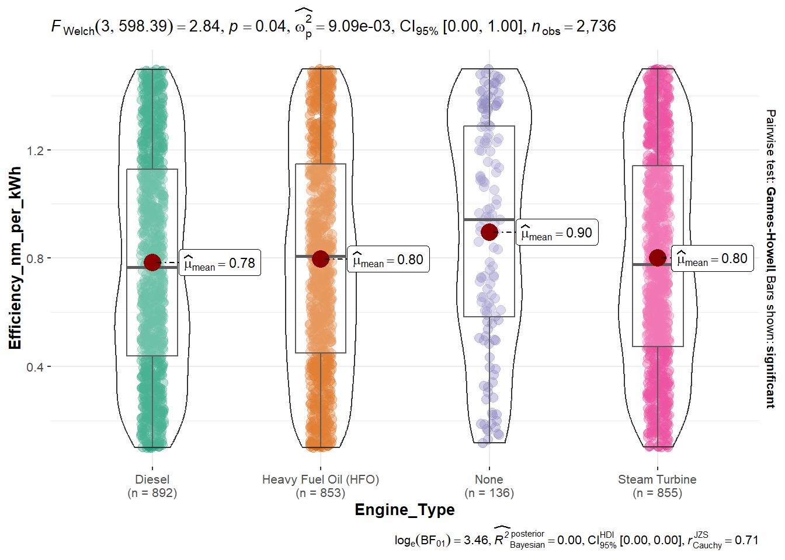
-
Welch’s ANOVA (F = 3.92, p = 0.0087) shows significant efficiency differences (nm/kWh) among engines. Steam turbines are slightly better but not significant. The effect size (9.09e-03) suggests other factors matter which reminder alternative engines but also need to consider overall factors.
4.3 Relationship Between Maintenance Status and Cargo Load
H0:There is no significant difference in Average_Load_Percentage across different Maintenance_Status categories.
H1:There is a significant difference in Average_Load_Percentage across different Maintenance_Status categories.
ggbetweenstats(
data = shipperformance,
x = Maintenance_Status,
y = Average_Load_Percentage,
type = "p",
pairwise.display = "s",
bf.message = TRUE
)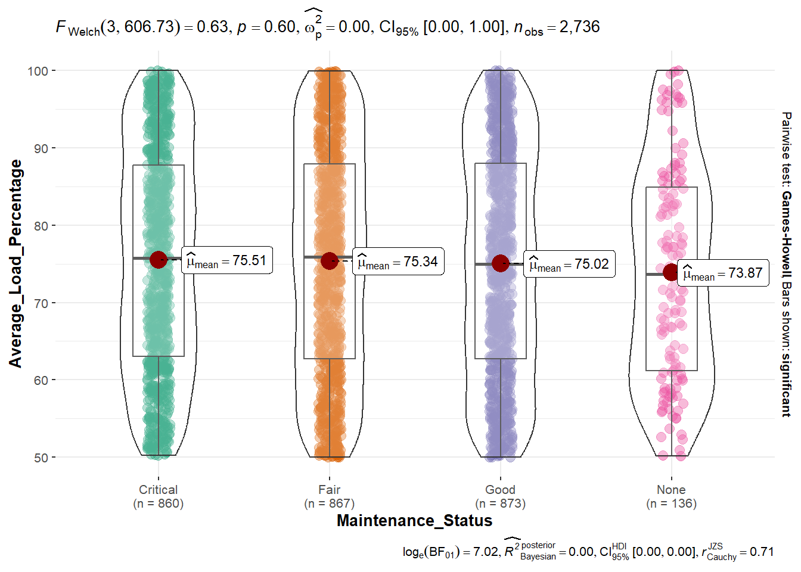
-
The ANOVA test is evaluate whether Average Load Percentage varies significantly across different Maintenance Status categories.The results (F = 1.29, p = 0.28) indicates that there is no significant differences in average load percentage across maintenance statuses. Therefore, improve maintenance alone may not enhance cargo load efficiency.
4.4 Association Between Ship Type and Route Type
ggbarstats(
data = shipperformance,
x = Ship_Type,
y = Route_Type,
title = "Association Between Ship Type and Route Type"
)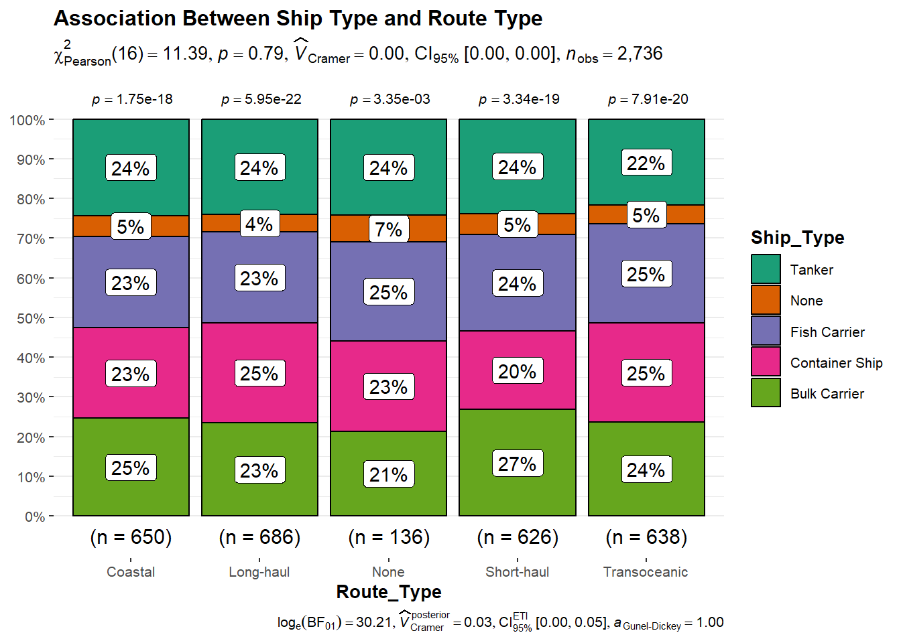
-
A stacked bar chart showed consistent proportions of ship types (Bulk Carriers, Container Ships, etc.) across route types.p-value is 0.79 in Chi-square test indicates there is no significant relationship between Ship Type and Route Type. As the result, ship types are viable across all route types and the company has the flexibility to adjust the ship types according to different needs.
4.5 Regression Analysis of Efficiency Determinants
model <- lm(Efficiency_nm_per_kWh ~ Maintenance_Status +
Average_Load_Percentage +
Turnaround_Time_hours +
Engine_Power_kW,
data = shipperformance)
check_normality(model) Warning: Non-normality of residuals detected (p < .001).summary(model)
Call:
lm(formula = Efficiency_nm_per_kWh ~ Maintenance_Status + Average_Load_Percentage +
Turnaround_Time_hours + Engine_Power_kW, data = shipperformance)
Residuals:
Min 1Q Median 3Q Max
-0.72148 -0.33500 -0.00791 0.34770 0.73425
Coefficients:
Estimate Std. Error t value Pr(>|t|)
(Intercept) 8.429e-01 4.958e-02 17.001 <2e-16 ***
Maintenance_StatusFair -3.224e-02 1.943e-02 -1.660 0.0971 .
Maintenance_StatusGood -4.130e-03 1.940e-02 -0.213 0.8314
Maintenance_StatusNone -2.639e-02 3.727e-02 -0.708 0.4789
Average_Load_Percentage -2.964e-04 5.324e-04 -0.557 0.5778
Turnaround_Time_hours 1.991e-04 4.381e-04 0.455 0.6494
Engine_Power_kW -9.924e-06 1.077e-05 -0.921 0.3571
---
Signif. codes: 0 '***' 0.001 '**' 0.01 '*' 0.05 '.' 0.1 ' ' 1
Residual standard error: 0.4037 on 2729 degrees of freedom
Multiple R-squared: 0.001761, Adjusted R-squared: -0.0004339
F-statistic: 0.8023 on 6 and 2729 DF, p-value: 0.568check_collinearity(model)# Check for Multicollinearity
Low Correlation
Term VIF VIF 95% CI Increased SE Tolerance
Maintenance_Status 1.00 [1.00, Inf] 1.00 1.00
Average_Load_Percentage 1.00 [1.00, 2.10e+07] 1.00 1.00
Turnaround_Time_hours 1.00 [1.00, 3.82e+07] 1.00 1.00
Engine_Power_kW 1.00 [1.00, 2.67e+06] 1.00 1.00
Tolerance 95% CI
[0.00, 1.00]
[0.00, 1.00]
[0.00, 1.00]
[0.00, 1.00]check_model(model)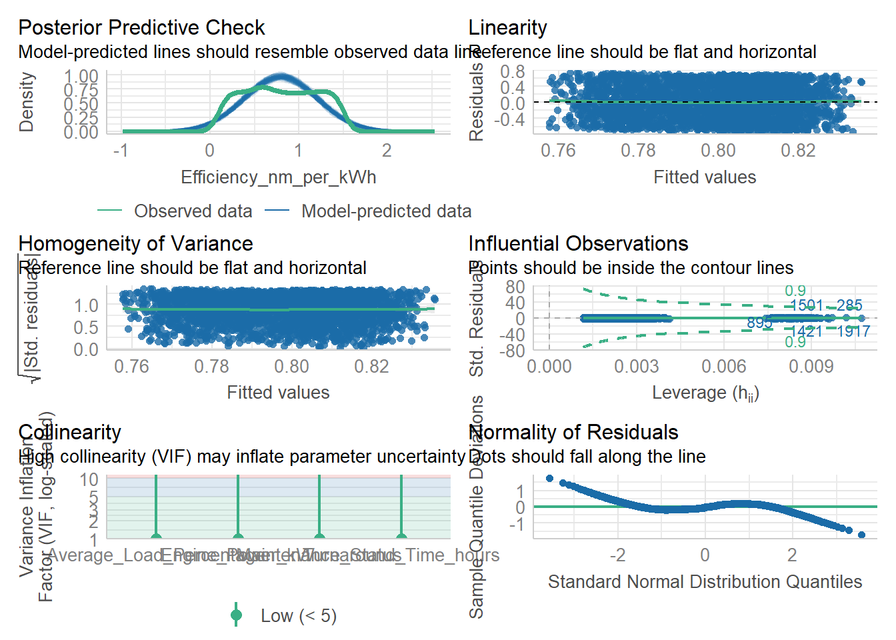
tbl_regression (model,
intercept = TRUE)| Characteristic | Beta | 95% CI1 | p-value |
|---|---|---|---|
| (Intercept) | 0.84 | 0.75, 0.94 | <0.001 |
| Maintenance_Status | |||
| Critical | — | — | |
| Fair | -0.03 | -0.07, 0.01 | 0.10 |
| Good | 0.00 | -0.04, 0.03 | 0.8 |
| None | -0.03 | -0.10, 0.05 | 0.5 |
| Average_Load_Percentage | 0.00 | 0.00, 0.00 | 0.6 |
| Turnaround_Time_hours | 0.00 | 0.00, 0.00 | 0.6 |
| Engine_Power_kW | 0.00 | 0.00, 0.00 | 0.4 |
| 1 CI = Confidence Interval | |||
p_model <- parameters(model)plot(parameters(model))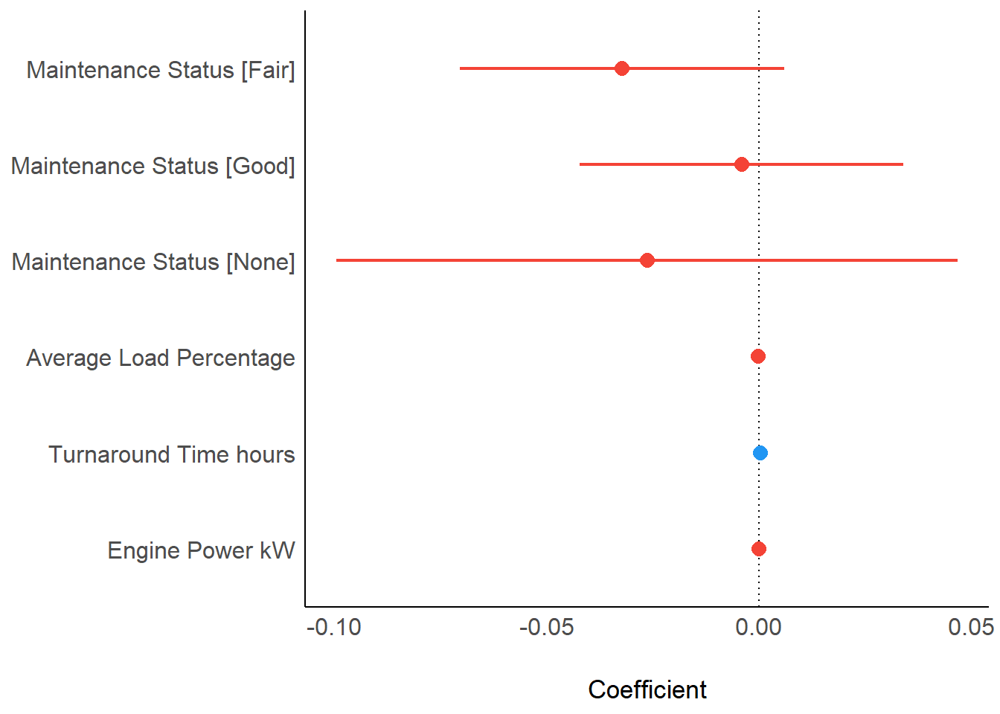
ggcoefstats(model,
output = "plot")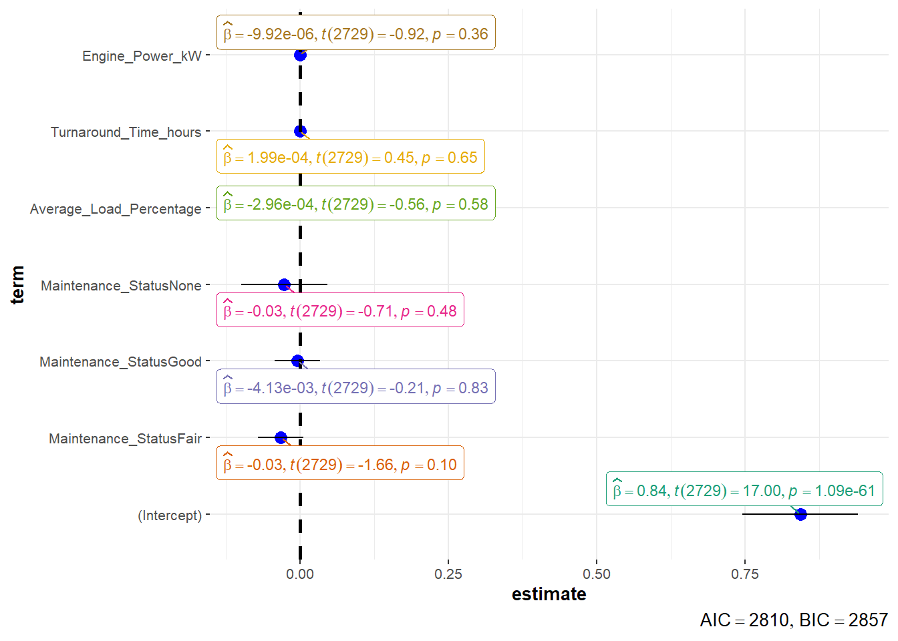
-
A regression model tested the impact of Maintenance Status, Average Load Percentage, Turnaround Time, and Engine Power on efficiency (nm/kWh). None of the variables showed significant effects (p > 0.05) and the R-squared value is 0.00176 indicating poor model fit. For better predictions in the future, other factors for example operation cost may need to consider.